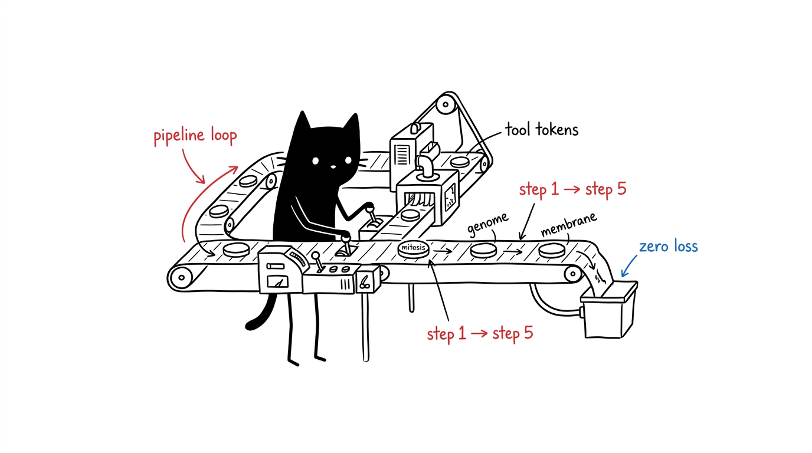

Alur Kerja Lintas Organel
Resep pipeline standar yang menggabungkan berbagai sel menjadi alur kerja otomatis. Setiap pipeline mencantumkan urutan pemanggilan alat, profil yang kompatibel, dan bagaimana status memori disimpan.

A — Rekayasa Fitur Otonom
Profil yang cocok: dev-workspace, headless-server. Perubahan kode full-stack dengan konteks memori yang dipulihkan dan pengujian otomatis.
- Pulihkan batasan proyek. hela-genome:get_session_context — arsitektur dan dependensi dari
memory.db. - Dekomposisi tugas. hela-mitosis:analyze_with_sequential_thinking — langkah implementasi atomik bertenaga Needle.
- Sunting kode. hela-membrane:write_file — perubahan minimal dan siap produksi.
- Jalankan tes. hela-nucleus:execute_command — contoh:
npm test. - Catat ke memori. hela-genome:add_observation — simpan penyelesaian dan relasi status.
B — Riset Mendalam & Sintesis Pengetahuan
Profil yang cocok: research, dev-workspace. Literatur ilmiah → dokumentasi live → ringkasan trade-off → penyimpanan pengetahuan.
- Survei data. hela-enzyme:research_brief — fan-out satu panggilan ke Google, arXiv, dan Wikipedia secara paralel (lebih cepat dari chaining manual).
- Ekstraksi web. hela-cytosol:browser_navigate → browser_get_page_markdown — ekstraksi teks terstruktur dari URL target.
- Sintesis. hela-mitosis:llm_summarize — analisis komparatif temuan.
- Simpan. hela-genome:create_entity + add_observation — entitas dan temuan masuk ke
memory.db. - Publikasikan. hela-membrane:write_file — ringkasan markdown disimpan di
docs/.
C — Sintesis & Verifikasi Desain UI
Profil yang cocok: web-devops, dev-workspace. Token warna → komponen antarmuka → render langsung → verifikasi visual & DOM.
- Bangun token. hela-phenotype:generate_tokens / palette_fetch — token warna OKLCH, skala tipografi, config Tailwind.
- Buat komponen. hela-membrane:write_file — kode komponen dan
tailwind.config.js. - Jalankan server. hela-nucleus:execute_command — server dev lokal.
- Verifikasi visual. hela-cytosol:browser_navigate → browser_screenshot — pemeriksaan pohon AX dan tangkapan visual.
- Catat pencapaian. hela-genome:add_observation — pencatatan milestone dan referensi snapshot.
D — Otomasi Perangkat Mobile & Pengujian UI
Profil yang cocok: android-testing, all. Jembatan perangkat keras dengan inspeksi XML hemat token (tanpa perulangan screenshot boros token).
- Deteksi perangkat. hela-receptor:device_list — pemindaian perangkat ADB yang terhubung.
- Buka sesi. hela-receptor:start_session — stream kontrol perangkat.
- Inspeksi UI. hela-receptor:ui_dump — hierarki struktural elemen antarmuka.
- Aksi sentuh. hela-receptor:tap / input_text — otomasi interaksi sentuh dan form.
- Catat laporan. hela-genome:add_observation — hasil tes disimpan di grafik memori.
E — Orkestrasi Proses PTY Interaktif
Profil yang cocok: dev-workspace, headless-server. Proses build panjang, REPL, dan otomasi berbasis regex stream.
- Spawn proses. hela-ribosome:agent_spawn — sesi agen opencode terarah (atau session_spawn untuk PTY mentah).
- Streaming log. hela-ribosome:session_read — chunk stdout/stderr terkontrol.
- Pasang trigger. hela-ribosome:session_hook — respon otomatis berbasis pola regex.
- Tutup proses. hela-ribosome:session_close — penutupan proses secara rapi.
- Simpan log. hela-genome:add_observation — pencatatan status exit dan log.
F — Pemodelan 3D Prosedural Blender Otonom
Profil yang cocok: 3d-modeling, all. Prompt bahasa alami → geometri prosedural → render visual → aset .blend.
- Rencanakan. hela-plastid:generate_modeling_plan — rencana skrip prosedural bertahap.
- Eksekusi kode. hela-plastid:execute_blender_code — pembuatan geometri, material, dan tata cahaya.
- Render. hela-plastid:render_output — tangkapan kamera viewport.
- Simpan berkas. hela-plastid:save_blend — berkas biner
.blenddisimpan diassets/. - Catat aset. hela-genome:add_observation — metadata aset dan jalur render.